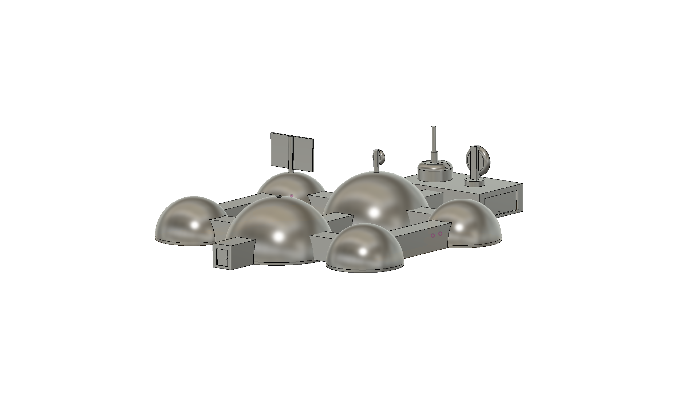
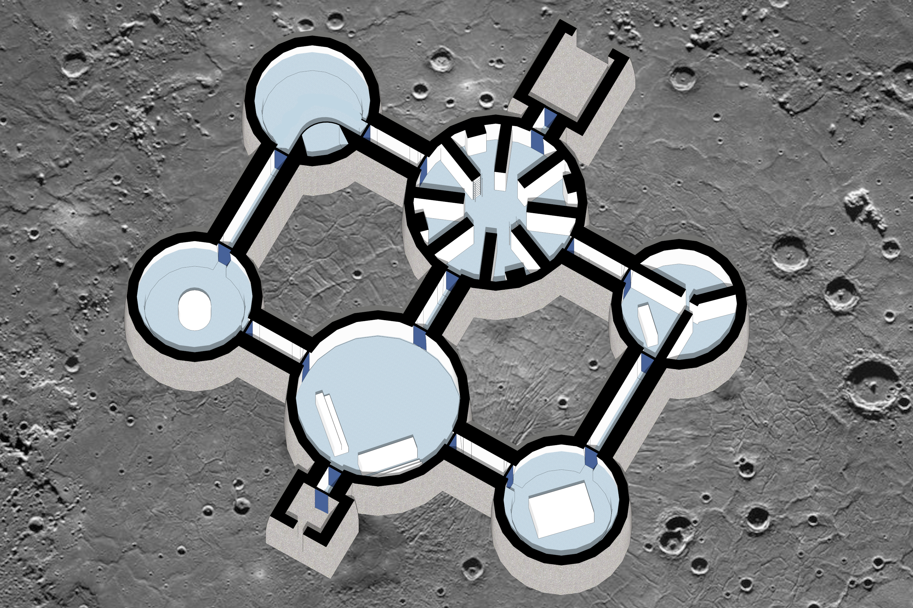
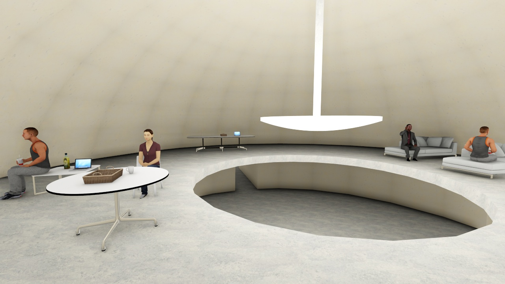
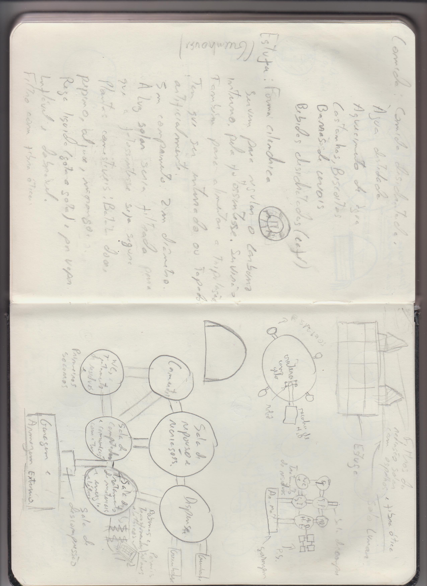
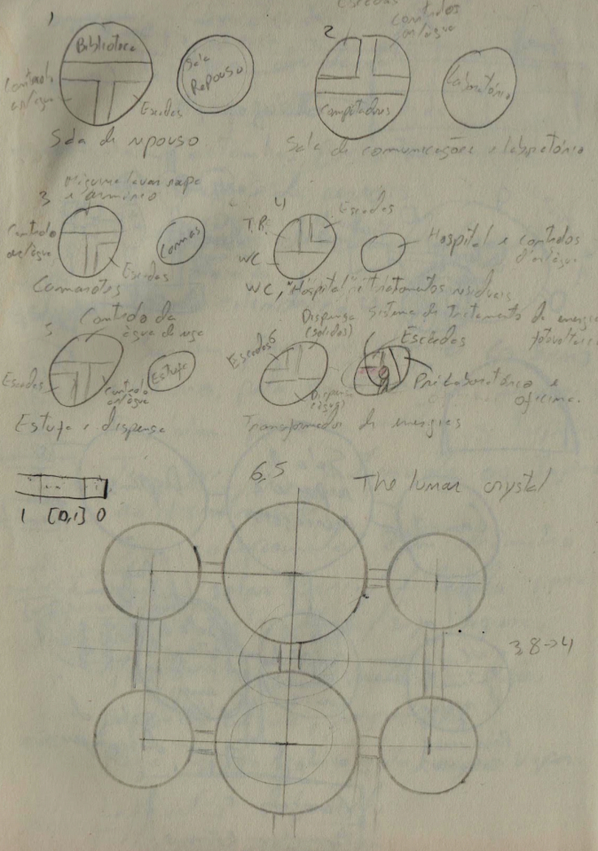

While in secondary/high school, the challenge to design an encampment on the moon, coming from ESA (European Space Agency) was proposed to my group in Physics assignment. We didn’t have knowledge on about almost anything, but tried our best to deliver a nice product. I was resposible for the initial sketches and modeling on the required software, Fusion 360, while another member decided to try his ideas on 3d modeling on a different program, since he had more knowledge on modeling on Catia. On the submition day we didn’t have the model on the required Fusion’s file, and we only got an honorary certificate of participation.


This project was meant to be modular, being constructed one module at a time, utilizing lunar regolith, allowing for more crew and improved communal living over its construction expansion. At its peak, would have modules for living, sleeping, hygiene/medical care, computational and chemical laboratories, also having a garage for rovers. Proved to be a simple intruduction to a method for further projects.

